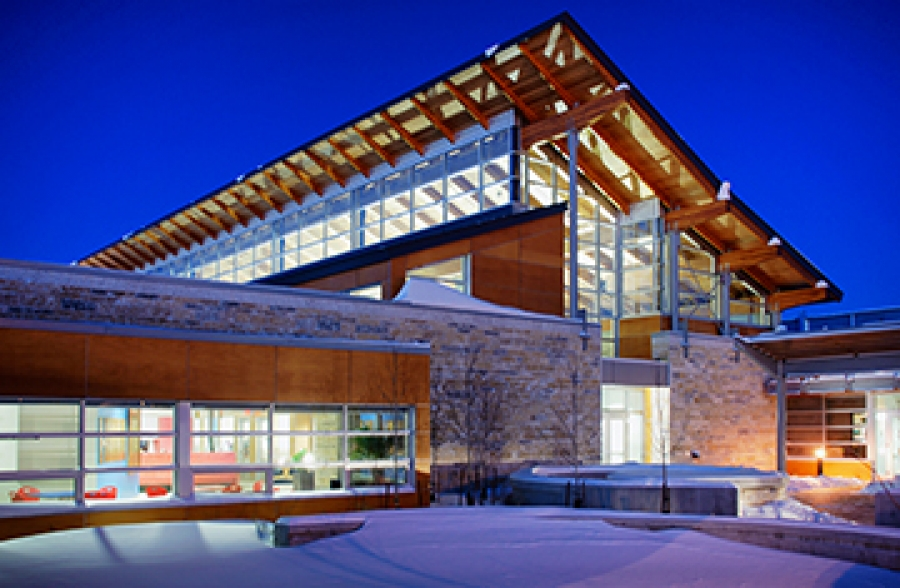

Who are we?
- A community service organization committed to protecting animals from suffering, and to promoting their welfare and dignity.
- The oldest animal shelter and welfare organization in Manitoba.
- Generous partners and hardworking volunteers united in the belief that every animal deserves love.
- Always growing, changing and adapting to meet the needs of Winnipeg's animal population.
